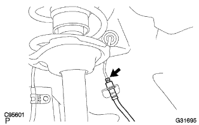

Front Flexible Hose No.1 Installation |
| 1. Lonoflexible hose No.1 installation |
Temporarily tighten the union of the brake tube to the No. 1 front flexible hose.
With a new clip, fix the front brake Flexible hose No.1 to the body.
|  |
ユニオンナットレンチ10を使用して、フロントブレーキチューブのユニオンを本締めする。
 |
In the bolt, attach the front brake Flexible hose No.1 to the front shock absorber.
Passing a new gasket, with Union Bolt, Front Brake Flexible Horse No.Connect 1 to the front disc brake cylinder.
| 2. Brake system air removal |
Brake fluid replenishment
 |
Stand up the brake fluid can on the reservoir.
Master Cylinda Air
Use Union Nut Wresten 10 to separate the two brake tubes from the brake master cylinder Assy.
 |
Slowly step on the brake pedal and hold that state.
 |
Close the tube hole with your finger and release the brake pedal.
Release your finger, slowly step on the brake pedal, hold the tube hole again, release the brake pedal, and repeat it three or four times.
Use the Union Nut wrench 10 to connect two brake tubes to the brake master cylinder asser.
Brake -based system air removal
Connect the vinyl tube to the buder plug.
Press the brake pedal several times and loosen the buder plug while stepping on the brake pedal.
When the brake fluid does not come out, tighten the bruder plug and put the brake pedal.
Repeat until the air is mixed in the brake fluid.
Similarly, remove the air from the brake line of each wheel.
Brake fluid quantity inspection
Check the amount of brake fluid, and replenish the brake fluid to the MAX position if necessary.
| 3. Brake fluid leak inspection |
| 4. Installation of front tires |